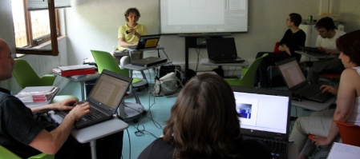
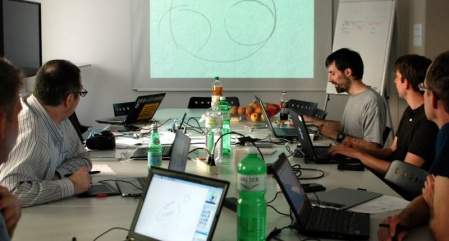

graphicslab.org
blog/
old_wiki/
10.6.2012: grafiklabor mit gimp
gimp 2.6 / preview gimp 2.8 / soundfumble
27.6.2012: scribus workshop @ marly-le-roy: scribus pour les journeaux d'école
http://www.intertice.fr/interTICE-Logiciels-Libres
8.7.2012: grafiklabor über mehrfarbige SVG fonts
+ Diskussion über freie Grafik in die Schule
9.7 - 11.7: graphisme @ rmll -> genf
http://rmll.info
Demnächst / Prochaînement / Next

14.6.2013
Ein lockerer Abend mit Inputs zur Welt der Grafik mit Open Source:
- The European Map of FLOSS:
Welche freie Software steht für die Schweiz?
- Dein Wissen über Klassifizierung von Schriftarten
auf den neusten Stand brigen
und gemeinsam ein Poster entwerfen.
- Printed Books oder eBooks:
Wohin führt uns die DTP-Zukunft?
Freier Eintritt, kühles Bier.
Ab September 2013 wieder frischer, regelmässig, bunter!
Workshop: Scripting in Scribus
5.6.2013: Mypaint brushes @ ETHZ
